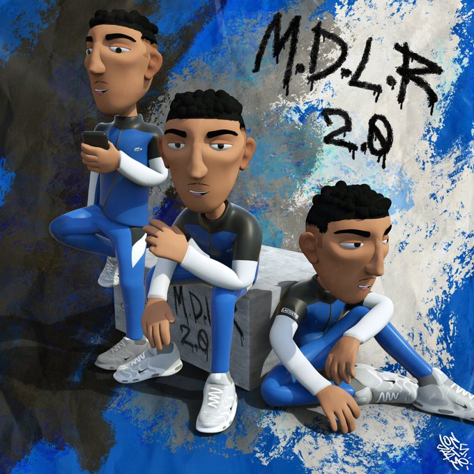

¿QUIÉN ES MORAD, EL RAPERO DE ‘MOTOROLA’ QUE LO ESTÁ PETANDO EN ESPAÑA?
Morad está revolucionando la escena urbana. En apenas un año, este chaval de ascendencia marroquí del barrio de La Florida de L’Hospitalet de Llogrebat se ha convertido en un referente para una parte del púbico. En sus letras, el cantante habla sobre las duras vivencias que ha pasado en su vida (estuvo en un centro de menores). Además, entre sus referencias musicales se encuentra el rap francés hecho por hijos de inmigrantes. Este rapero no ha parado de ganar seguidores y seguidoras durante los últimos meses. Gracias a temas como Lo que quiera, Cuidadito o Aguantando, que suman millones de reproducciones en Youtube, el joven se ha hecho un hueco en la industria. ¡Y tanto que se lo ha hecho! Morad se ha convertido en uno de los raperos de la escena urbana española con más oyentes mensuales en Spotify: ¡el joven suma 2,4 millones! Una auténtica barbaridad.

Pero la cosa no se queda ahí. Si seguimos hablando de datos, en su canal de Youtube suma más de medio millón de suscriptores y en Instagram más de 740 mil followers. ¡Nada mal! De hecho, el pasado 2019, Youtube lo metió como una de las promesas musicales de cara a 2020. La plataforma lo metió en su sección DSCVR, donde apuesta por nuevos rostros musicales. Fue el pasado 2019 cuando el artista lanzó su primer álbum. Bajo el nombre de M. D. L. R. (las iniciales de Mec De La Rue, un término que utilizan algunos raperos franceses), Morad hizo su debut dejando claro que la industria necesitaba su música. Este mismo mes de noviembre, el cantante ha lanzado Motorola, una canción que rinde homenaje a esos móviles que miles de adolescentes llevaban a finales de la primera década de los 2000’s. El videoclip, que salió el pasado jueves 12 de noviembre, ha estado más de cuatro días en el número 1 de tendencias España. De hecho, el tema, suma ya más de dos millones de reproducciones. Para la ocasión, Morad ha decidido grabar en vertical, intentando llevar la esencia de aquellos móviles a su público. Y vamos si lo ha conseguido.
M.D.L.R 2.0: último trabajo de Morad que acapara las tendencias de YouTube
Morad continúa siendo uno de los artistas más prolíferos de este 2020. Si hace un mes advertida de que "Que viene el álbum", ayer esto se hizo realidad con el lanzamiento de M.D.L.R 2.0. El artista de L’Hospitalet lanzó ayer estos 5 temas de los que está compuesto este último álbum a la red, un trabajo lleno de buenas barras y temáticas de las que suele hablar el artista. Y como era de esperar, la acogida ha sido increible. "La cantera ha vuelto chavales!! Disponible en todos lados", con este mensaje Morad presentaba "Tienes que", "Recuerdos", "Pensamientos", "No hace na" y "Lo malo". En estas canciones el rapero trata temas como el amor y el desamor, el orgullo personal, la despreocupación por las visitas de sus temas o las críticas y sobre personas que se encuentran encerradas, ya sean mayores en prisión o menores en centros de acogida. Pero en definitiva de lo que habla es de las consecuencias de la vida de la calle, algo que resume en su obra culmen de este disco, Pensamientos.  Para este trabajo Morad ha contado con colaboraciones en la producción de SHB, Jordan Ivey, Tr Fact, G Niviala, J Portillo y M Castejon. Estos han sido los encargados de aportarle el beat a la canción, que además de estar acompañadas de la letra del artista encontramos un videclip de animación en el que un Morad animado, piensa sobre los temas que está tratando invitando a cada uno a esa misma reflexión. De esta forma se cierra la segunda parte de "Mec de la rue", que en español significa chaval de la calle, colando "Recuerdos", "Pensamientos" y "Tienes que" en los numeros segundo, tercer y quinto lugar de tendencias de YouTube respectivamente.
Morad responde a las filtraciones en el nuevo clip de ‘Yo No Voy’
Un problema que ha existido desde hace muchos años en la industria es el de las filtraciones, esto es, publicaciones de un tema antes de lo planeado por alguien que los artistas desconocen, estropeando así la sorpresa para todos los fans y sobre todo, para el artista. Morad lo ha sufrido recientemente, y para responder ha decidido grabar de nuevo uno de esos temas, ‘Yo No Voy’, con un nuevo videoclip. Tras ver el éxito de algunas canciones que se filtraron y no iban a salir a la luz, el de L’H decide volver a grabar esos temas que han sido viralizados en TikTok y comenzar un nuevo proyecto semana a semana. Esta primera es el turno de ‘Yo No Voy’, un ritmo francés acelerado que mantiene la esencia del artista barcelonés del momento, en el que deja muy claras sus intenciones. Acostumbrados a que últimamente nos traiga un tempo más pausado en el que la letra cobra aún más importancia, en esta ocasión nos pone a bailar con algo mucho más movido. El tema está producido por Voluptyk y SHB, mientras que en esta ocasión la dirección visual corre a cargo de Puig Films. En la canción, vemos cómo Morad decide regrabar partes del tema ante las filtraciones que se produjeron.